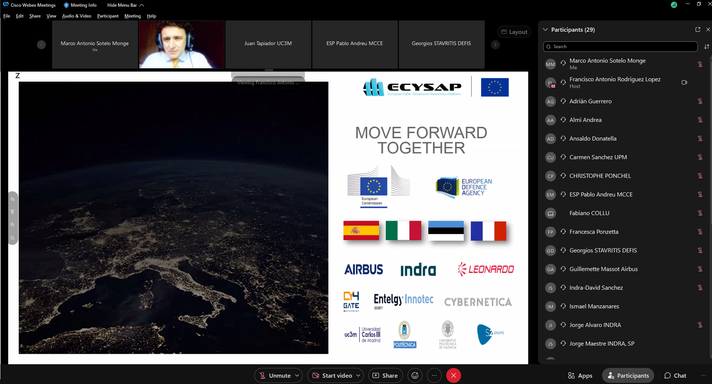
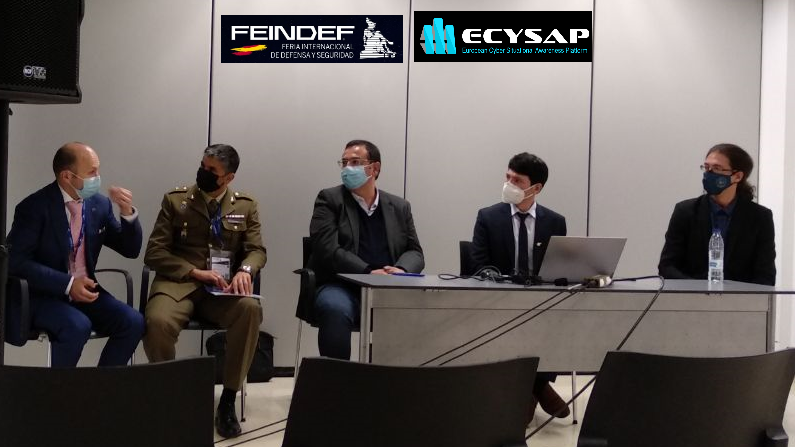
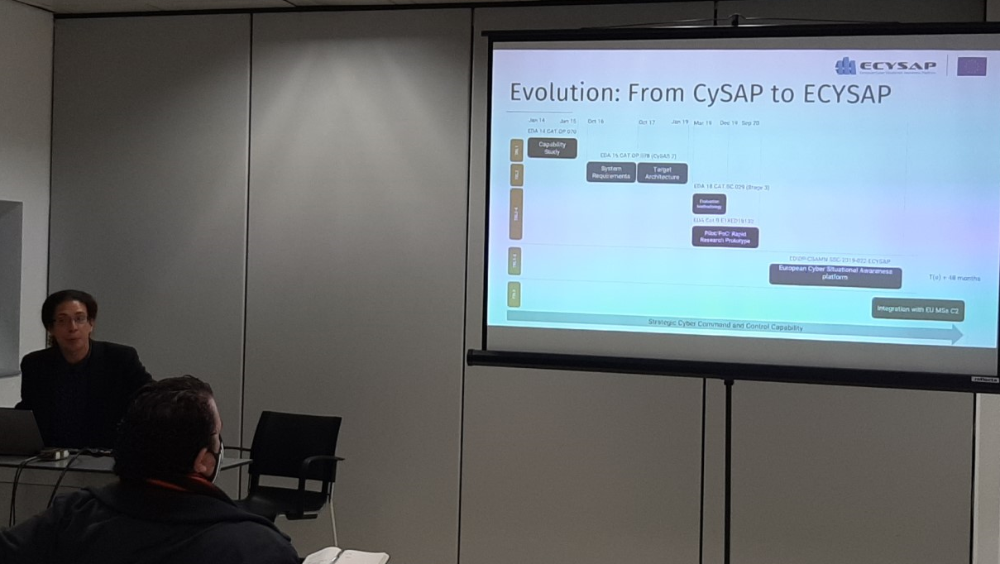
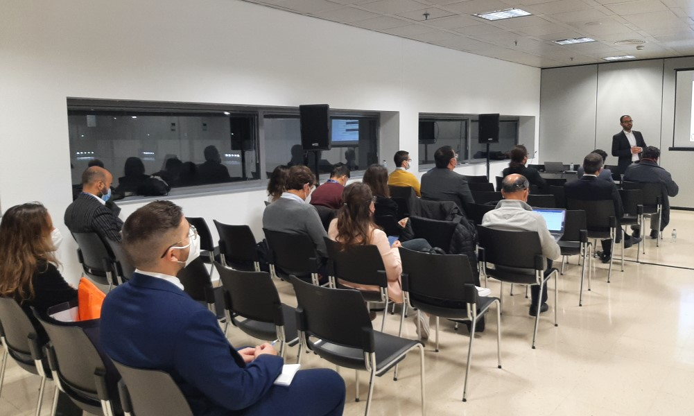
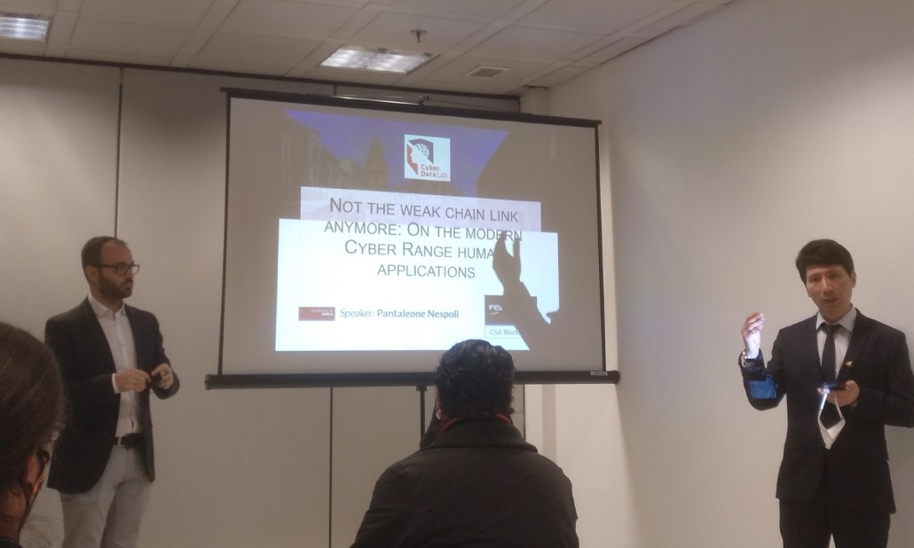
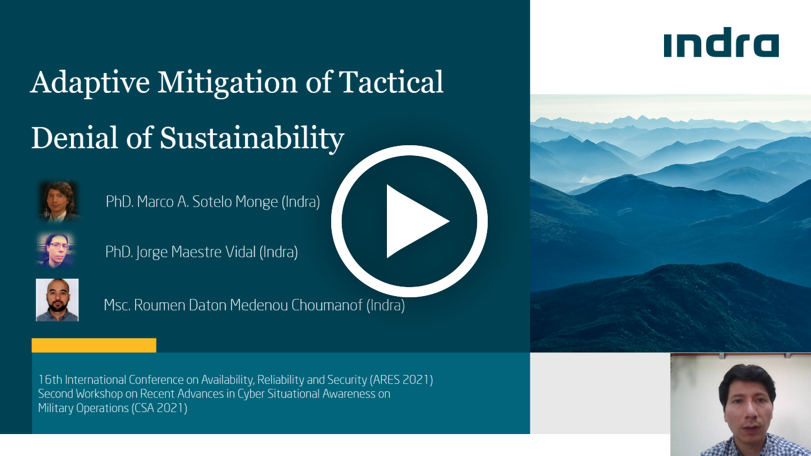

Multimedia Gallery
- All Media
- Video
- Photo
- 2021
- ARES CSA 2021

ECYSAP Second Plenary Meeting: closure
A warm ending with the typical closing of the meeting and satisfaction for the work done.

Second Plenary Meeting held online
The consortium gathered together in an online event with active participation.

ACSA workshop at FEINDEF: Round table
Research and innovation directions on CyberSituational Awareness (EDA, MCCD, UMU and Indra).

CSA workshop at FEINDEF: ECYSAP at stage
Presentation of the ECYSAP motivation, challenges and recent advances by Indra.

CSA workshop at FEINDEF: Participation
Workshop participants meeting at FEINDEF 2021.

CSA workshop at FEINDEF: keynote conference
Introducing Pantaleone Nespoli from University of Murcia.
CSA workshop at FEINDEF: EDA at stage
David Antunes with a note on opportunities in CSA.
CSA workshop at FEINDEF: Round table
Jorge Maestre and his vision of CSA on dual-use technologies.
CSA workshop at FEINDEF: ECSYAP team
CSA workshop at FEINDEF: ECSYAP team

CSA workshop at FEINDEF: ECSYAP team

Understanding the Ethical and Regulatory boundaries of the Military Actuation on the Cyberspace
Author(s): Pedro José Ramón Y Cajal Ramo and Jorge Maestre Vidal (Indra)
The Stress as Adversarial Factor for Cyber Decision Making
Author(s): David Sandoval Rodríguez-Bermejo, Jorge Maestre Vidal and Juan Estévez Tapiador

Adaptive Mitigation of Tactical Denial of Sustainability
Author(s): Marco Antonio Sotelo Monge. Jorge Maestre Vidal and Roumen Daton Medenou
ECYSAP Second Plenary Meeting: closure
A warm ending with the typical closing of the meeting and satisfaction for the work done.Second Plenary Meeting held online
The consortium gathered together in an online event with active participation.ACSA workshop at FEINDEF: Round table
Research and innovation directions on CyberSituational Awareness (EDA, MCCD, UMU and Indra).CSA workshop at FEINDEF: ECYSAP at stage
Presentation of the ECYSAP motivation, challenges and recent advances by Indra.CSA workshop at FEINDEF: Participation
Workshop participants meeting at FEINDEF 2021.CSA workshop at FEINDEF: keynote conference
Introducing Pantaleone Nespoli from University of Murcia.
CSA workshop at FEINDEF: EDA at stage
David Antunes with a note on opportunities in CSA.
CSA workshop at FEINDEF: Round table
Jorge Maestre and his vision of CSA on dual-use technologies.
CSA workshop at FEINDEF: ECSYAP team
CSA workshop at FEINDEF: ECSYAP team
CSA workshop at FEINDEF: ECSYAP team
Understanding the Ethical and Regulatory boundaries of the Military Actuation on the Cyberspace
Author(s): Pedro José Ramón Y Cajal Ramo and Jorge Maestre Vidal (Indra)
The Stress as Adversarial Factor for Cyber Decision Making
Author(s): David Sandoval Rodríguez-Bermejo, Jorge Maestre Vidal and Juan Estévez TapiadorAdaptive Mitigation of Tactical Denial of Sustainability
Author(s): Marco Antonio Sotelo Monge. Jorge Maestre Vidal and Roumen Daton Medenou


This document has been produced under the EC Grant Agreement Project 101168092 It is confidential and its content is the property of the companies indicated in the slide “Intellectual Property”. Its content shall not be copied, disclosed, or used in whole or in part without the formal approval of the owning companies.
DISCLAIMER: Responsibility of this pages's content lies entirely with the ECYSAP-EYE consortium. All contents related to the ECYSAP-EYE project reflect only the author’s view. The European Commission is not responsible for any use that may be made of the information it contains.
2025 Copyright © All rights reserved.